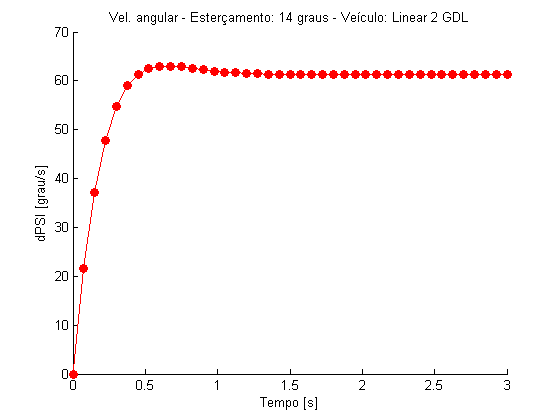
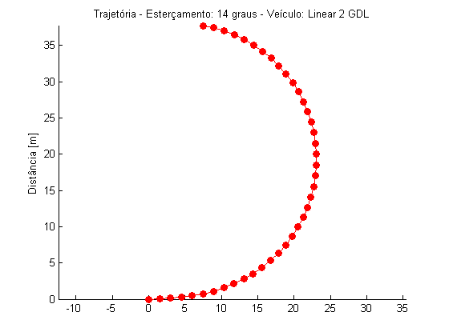

Comparação - DELTA = 14 graus
Este script mostra o desempenho dos veículos para um ângulo de esterçamento de 14 graus e condições iniciais nulas.
Contents
Vai ser o número de figuras
veiculoModeloVet = [1 2 3]; veiculoModeloTxt = char(' Linear 2 GDL',' Não linear 2 GDL',' Não linear 3 GDL'); %veiculoModeloTitulo4 = 'veiculoNaoLinear3gdlExtendido'; veiculoDados = 2; % Vai ser o número de curvas em cada figura pneuModeloVet = [1 2 3]; % Modelos 1-Linear; 2-Sadri; 3-Pacejka pneuModeloTxt = char('Linar','Sadri','Pacejka'); pneuModeloCor = char('r','g','b'); pneuModeloMarcador = char('o','s','d'); pneuDadosVet = [1 2 3]; for i = 1:length(veiculoModeloVet) for j = 1:length(pneuModeloVet)
veiculoModelo = veiculoModeloVet(i); pneuModelo = pneuModeloVet(j); pneuDados = pneuDadosVet(j);
%% Dados básicos da integração (integrador é chamado mais abaixo) % T = 3; % Tempo total de simulação TSPAN = 0:T/40:T; % Vetor de tempo de análise r0 = 0; % velocidade angular [rad/s] vy0 = 0; % velocidade lateral [m/s] v = 20; % velocidade longitudinal [m/s] -> ATENÇÃO: Tem que estar de acordo com os dados dos veículos com 2 gdl ALPHAT0 = asin(vy0/v); % conversão de vy0 para ALPHAT x0 = [r0 ; ALPHAT0]; % Condição inicial dos estados x0 = [x0 ; 0]; % Condição da orientacao x0 = [x0 ; 0 ; 0]; % Condição inicial da trajetória if veiculoModelo == 3 % Para que o integrador consiga rodar no modelo com 3 gdl é necessário acrescentar uma % condição inicial referente ao estado velocidade "v". % Ou seja, a velocidade que era prescrita antes agora é condição inicial x0 = [x0 ; v]; % Condição inicial da velocidade end [pneuFun,veiculoFun,pneuDadosFrente,pneuDadosTras,veiculoDadosVet,pneuTxt,veiculoTxt] = seletor(pneuModelo,pneuDados,veiculoModelo,veiculoDados); [TOUT,XOUT] = ode45(@(t,x) veiculoFun(t,x,pneuFun,pneuDadosFrente,pneuDadosTras,veiculoDadosVet),TSPAN,x0); figure(i) hold on H1 = plot(TOUT,XOUT(:,1)*180/pi,pneuModeloCor(j)); set(H1,'Marker',pneuModeloMarcador(j),'MarkerFaceColor',pneuModeloCor(j),'MarkerSize',7) title('Velocidade angular X Tempo') title(strcat('Vel. angular - Esterçamento: 14 graus - Veículo: ',veiculoModeloTxt(i,:))); ylabel('dPSI [grau/s]') xlabel('Tempo [s]') if j == length(pneuModeloVet) legend(pneuModeloTxt(1,:),pneuModeloTxt(2,:),pneuModeloTxt(3,:),'Location','SouthEast') end figure(i + 10); hold on axis equal H1 = plot(XOUT(:,4),XOUT(:,5),pneuModeloCor(j)); set(H1,'Marker',pneuModeloMarcador(j),'MarkerFaceColor',pneuModeloCor(j),'MarkerSize',7) title(strcat('Trajetória - Esterçamento: 14 graus - Veículo: ',veiculoModeloTxt(i,:))); ylabel('Distância [m]') if j == length(pneuModeloVet) legend(pneuModeloTxt(1,:),pneuModeloTxt(2,:),pneuModeloTxt(3,:),'Location','SouthEast') end 
Undefined function or variable 'pneuSadriDados'. Error in seletor (line 21) pneuSadriDados Error in comparacaoDelta14 (line 46) [pneuFun,veiculoFun,pneuDadosFrente,pneuDadosTras,veiculoDadosVet,pneuTxt,veiculoTxt] = seletor(pneuModelo,pneuDados,veiculoModelo,veiculoDados);
end end